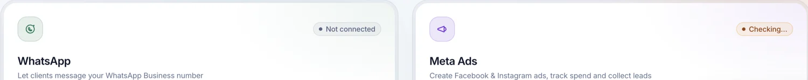

myPAL Marketing already provides the campaign workspace. One Dream operations supplies approved contacts and centre events for relevant communications.
Reuse the existing workspace
Existing
Campaigns and insights
Use the campaign workspace and engagement dashboard to review audiences, sends, reads, clicks and trends. Use Scheduler, Publish and Marketing Content to organise content. Open myPAL Marketing ↗
Existing
WhatsApp templates
Create and preview templates, submit to MsgKart for Meta approval and use approved templates in campaigns. Open templates ↗
Existing
Content drafts
Review, edit and publish AI-generated content drafts in myPAL Marketing. This is separate from the optional One Dream AI assistant. Open AI drafts ↗
Existing
Social integrations
The existing workspace supports Facebook, Instagram Business, YouTube, WhatsApp and Google Business Profile, and shows a Meta Ads integration surface. One Dream accounts and permissions need to be configured. Google integrations ↗ · Meta integrations ↗
AI Drafts review queue · Existing myPAL Marketing productGoogle and Meta channels · Existing myPAL Marketing product

WhatsApp and Meta Ads integration cards · Existing myPAL Marketing product
Cropped reference screens show the existing product. They do not indicate One Dream account status. Product links may require myPAL sign-in.
Connect One Dream events
01Enquiry and trial
Route website enquiries to the front desk. Acknowledge enquiries, confirm trials and send reminders. Stop follow-ups once the action is completed or the contact opts out.
02Enrolment and billing
Send enrolment and welcome messages, payment links and invoices, fee-due nudges and renewal reminders. Suppress collection reminders after payment.
03Attendance and engagement
Send optional absence follow-ups, batch and timetable changes, holiday notices, birthdays and progress milestones. Use opted-in audiences for offers, inactive-lead reactivation and new programme announcements.
04Consent, staff control and delivery
Dedicated One Dream WhatsApp Business API number and approved templates. Check opt-in, opt-out and sending hours; log sends and failures, allow staff overrides and flag delays and retry issues. Keep marketing consent distinct from media consent.
05Integration boundary
Use the proposed API layer to pass only fields needed to deliver approved journeys. Staff review and provider approval are required for activation. Instagram Auto DM and the One Dream AI assistant require separate scope agreement.